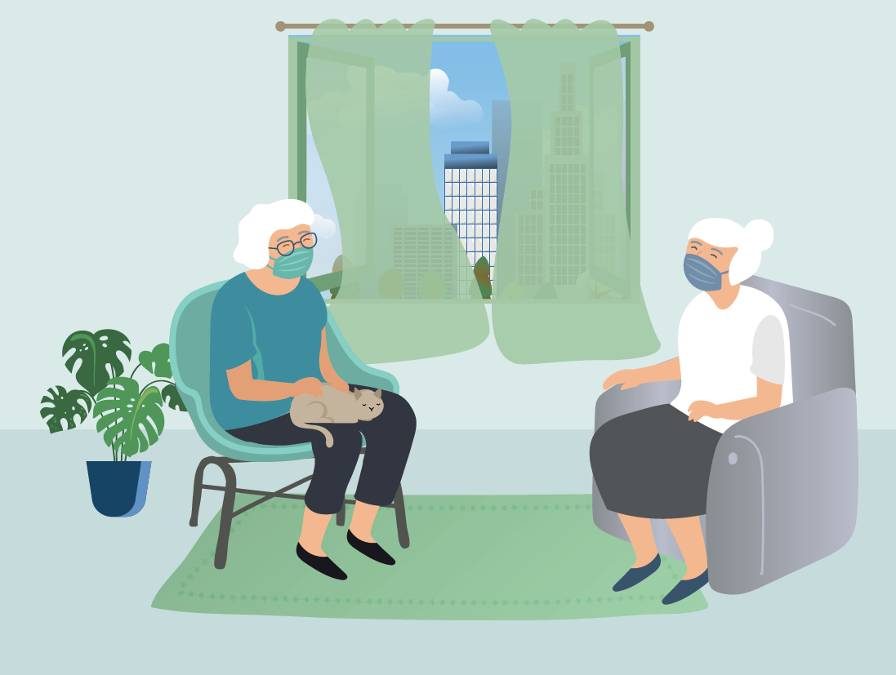

Gut durch die Sommerhitze während erhöhtem Infektionsschutz
Informationen für ältere Menschen ab 65 Jahren
Institut und Poliklinik für Arbeits-, Sozial- und Umweltmedizin des LMU Klinikums
Autoren:
Stephan Böse-O´Reilly
Katharina Deering
Hanna Mertes
Julia Schoierer
www.klimawandelundbildung.de
Grafik:
Petra Morcher
PeMoCoDe